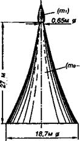

Первые опыты и неудачи
Впрочем, члены Немецкого ракетного общества довольно скоро перешли от слов к делу. Несмотря на то что Германия в те годы переживала далеко не лучшие времена, расплачиваясь после проигрыша Первой мировой войны огромными контрибуциями странам-победителям, Максу Валье и его коллегам удалось найти источники финансирования для первых экспериментов по созданию ракет.
В частности, им удалось заинтересовать автомобильного магната Фрица фон Опеля, который оплатил эксперименты по созданию «ракетного автомобиля».
Испытания его прошли с большим шумом — как в прямом, так и в переносном смысле. Так что фон Опель не прогадал и реклама его детищу получилась отличная. Однако большой практической ценности автомобили, снабженные батареями пороховых ракет, не имели.
Тогда Валье зашел с другой стороны и предложил фон Опелю провести еще и серию опытов с ускорителями для самолетов. И хотя сам Макс Валье вскоре погиб во время испытаний нового ракетного двигателя, его смерть не остановила других.

«Пороховая башня» архитектора В. Гомана.
В июне 1928 года на горе Вассеркуппе в Западной Германии был подготовлен к старту самолет, точнее, планер типа «утка». Он был оснащен ракетными двигателями, созданными на фабрике «Синус», принадлежащей инженеру Фридриху Зандеру, который также состоял членом Немецкого ракетного общества.
Несмотря на тщательную подготовку, первые две попытки поднять в воздух планер закончились неудачей. Сначала летчику-испытателю Штаммеру вообще не удалось подняться в воздух. Во второй раз планер взлетел, но вскоре из-за неисправности был вынужден приземлиться, пролетев всего около 200 м.
Наконец, в третий раз, когда на планер установили два ракетных двигателя на твердом топливе с тягой по 20 кг, летчику удалось пролететь 1,5 км. Причем, как отметил пилот, полет, длившийся считанные минуты, «был приятен ввиду отсутствия вибраций от вращающегося винта».
Но, к сожалению, этот успех оказался единичным. При следующем испытании планер загорелся в воздухе. Пилоту чудом удалось сбить огонь и посадить аппарат.
Ремонту он уже не подлежал, и фон Опель заказал новый ракетный планер. Он был готов к летным испытаниям 30 сентября 1929 года. После нескольких неудачных попыток он все-таки взлетел и совершил полет продолжительностью около 10 минут со скоростью около 160 км/час. Однако при посадке он опять-таки загорелся и оказался совершенно не пригодным для дальнейших испытаний.
Следующая попытка связана с именем Германа Оберта. Успешный литератор опять-таки решил перейти от слов к делу и осенью 1928 года уговорил кинорежиссера Фрица Ланга и других создателей фантастического фильма «Женщина на Луне» использовать для рекламы демонстрационный запуск настоящей ракеты.
Получив деньги, Оберт вместе инженером Рудольфом Небелем и Шершевским (русским эмигрантом) построил ракету «Кегельдюзе». Она представляла собой алюминиевую сигару длиной около 1,8 м. Причем дюзы, через которые вырывались пороховые газы, были расположены не в корме, как обычно, а в носу ракеты. Оберт полагал, что «ракета с носовой тягой» будет более устойчива в полете. Однако на практике изобретателям так и не удалось добиться устойчивого горения пороховых шашек и демонстрационный полет пришлось отложить «до лучших времен».
ЭКСПЕРИМЕНТЫ НА «РАКЕТНОМ ПЛАЦУ». Первые неудачи холодным душем пролились на горячий энтузиазм членов Немецкого ракетного общества. Напротив, Общество перестроило свои ряды и пошло в новую атаку.
На одном из заседаний было решено выкупить оборудование, изготовленное по заказу фирмы «Уфа-фильм» для «лунной ракеты», и продолжить эксперименты. Причем Рудольф Небель предложил построить новую ракету с уже жидкостным двигателем, имевшим ряд преимуществ перед твердотопливным.
Вскоре членам Общества удалось связаться с Государственным институтом химии и технологии, директор которого доктор Риттер обещал оказать содействие дальнейшим экспериментам.
Ракета «Кегельдюзе» была создана и в назначенный для испытаний день запущена, несмотря на проливной дождь. Кстати, в ее запуске принимали самое непосредственное участие молодые члены Общества Клаус Ридель и студент Вернер фон Браун.
Довольный увиденным, доктор Риттер выдал Оберту официальный документ, удостоверяющий, что «двигатель „Кегельдюзе“ исправно работал 23 июля 1930 года в течение 90 секунд, израсходовав 6 килограммов жидкого кислорода и 1 килограмм бензина и развив при этом тягу около 7 килограммов».
После успеха с «Кегельдюзе» члены Общества взялись за разработку ракеты «Мирак». Испытательный стенд разместили на семейной ферме Риделей неподалеку от саксонского городка Бернштадга. Однако в сентябре 1930 года ракета взорвалась прямо на стенде.
К счастью, никто особо не пострадал. А само известие о взрыве наделало столько шума в местной прессе, что на частные пожертвования Небель вскоре смог приобрести участок площадью в 5 квадратных километров в районе Рейникендорфа, пригорода Берлина. Здесь и был 27 сентября 1930 года основан ракетный полигон, который Небель назвал «Ракетенфлюгалатц» («Ракетный аэродром»).
Здесь и решено было испытать вторую модель ракеты «Мирак», которая представляла собой увеличенную копию первой ракеты. Однако и она взорвалась весной 1931 года в результате разрыва бака с жидким кислородом. После этого решено было построить третью ракету, учтя предыдущие ошибки.
Новый двигатель для нее состоял из двух секций и хорошо работал на стенде, поглощая 160 г жидкого кислорода и бензина за одну секунду, развивая взамен тягу в 32 кг! Ракетчики за сходство формы прозвали его «яйцом».
Но пока готовились летные испытания «яйца», Иоганн Винклер при финансовой поддержке фабриканта Хюккеля построил и запустил ракету HWR-1 с жидкостным двигателем, застолбив, таким образом, свой приоритет. Правда, ракета Винклера имела в длину всего 60 см и весила 5 кг, а внешне была похожа на коробчатый змей, состоявший из трех трубчатых баков, частично закрытых алюминиевой обшивкой. Тем не менее после нескольких неудачных пусков она взлетела, едва не достигнув высоты 500 м. Случилось это 14 марта 1931 года.
Тем временем настал день испытаний и на «Ракетенфлюгплатце»: 14 мая 1931 года здесь с диким ревом стартовал «Репульсор-1» — модификация «Мирака». Взлет получился неудачным: аппарат ударился о крышу соседнего здания, после чего сделал мертвую петлю и, спикировав, упал на землю с работающим двигателем.
Работа над «Репульсором-2» началась тотчас после анализа аварии. Ударными темпами новая модель была подготовлена к запуску уже 23 мая 1931 года. На этот раз «Репульсор» благополучно взлетел, достиг высоты около 60 м, затем перешел на горизонтальный полет и перелетел через весь «Ракетенфлюгплатц». Ракетчики потом с трудом нашли его висящим на ветвях большого дерева в 600 м от старта.
При этом модель оказалась совершенно разбитой.
Следующий «Репульсор» был построен всего за несколько дней и отличался от предыдущих лучшими характеристиками. На испытаниях, проведенных в начале июня, ракета быстро достигла высоты в 450 м. Но тут по неизвестной причине сработал часовой механизм выбрасывания парашюта. Парашют раскрылся, но ракета продолжала лететь, разорвав купол в клочья. Описав огромную дугу, она опять-таки приземлилась за пределами плаца — в том же окрестном парке, где нашел свой конец «Репульсор-2».
В дальнейшем с переменным успехом ракетчики продолжали строить и запускать все более совершенные модели ракет.
Один из таких запусков закончился конфузом. Очередной «Репульсор» порвал свой парашют, врезался в крышу соседнего сарая и поджег его. И хотя сарай был старым и ничего ценного в нем не хранилось, но он, к несчастью, принадлежал полицейскому участку, находившемуся аккурат напротив плаца. Нагрянула полиция, последовало долгое разбирательство всех обстоятельств дела, закончившееся, впрочем, вполне благополучно. Специально для полицейских было устроен показательный запуск ракеты. Ракетчики также оплатили стоимость старого сарая, взамен получив разрешение продолжать работы.
Всего к концу 1933 года в «Ракетенфлюгплатц» было осуществлено 87 пусков ракет и 270 запусков двигателей на стенде. Кто знает, как пошли бы дела дальше, но тут к власти пришел Гитлер. Небелю пришлось пойти на поклон к нему. Он направил в соответствующие инстанции «Секретный меморандум о дальнобойной ракетной артиллерии».
Вскоре было намечено провести показ ракеты Небеля на армейском испытательном полигоне в Куммерсдорфе, близ Берлина. Причем армейские специалисты потребовали, чтобы ракета выбросила красное пламя в вершине траектории. Заказ был, в принципе, выполнен, хотя «Репульсор» и на сей раз отклонился от вертикального направления. Однако армейских чинов ракета-игрушка не впечатлила.
И на полигоне вскоре появились молодые люди в серо-голубой форме — представители «Дейче люфтвахт». Они заявили, что это место передано им в качестве учебного плаца.
Не спас ни «Ракетенфлюгплатц», ни само Общество даже спешно предложенный проект «Пилот-ракеты». По проекту она должна была иметь огромные для того времени размеры (высота — 7,62 м) и мощный ракетный двигатель с тягой до 600 кг. В одном отсеке должны были помещаться кабина с пассажиром и топливные баки, а в другом — двигатели и парашют. Предполагалось, что ракета достигнет высоты 1000 м, где будет раскрыт парашют.
Первый запуск непилотируемого прототипа ракеты был запланирован на 9 июня 1933 года. Однако и первый, и последующие запуски оказались неудачными.
И дальше пошли уже другие. Примерно в то же время в Куммерсдорфе бывший член Общества и бывший студент, а ныне молодой инженер Вернер фон Браун начал работу над проектом, условно обозначенным как А-1.